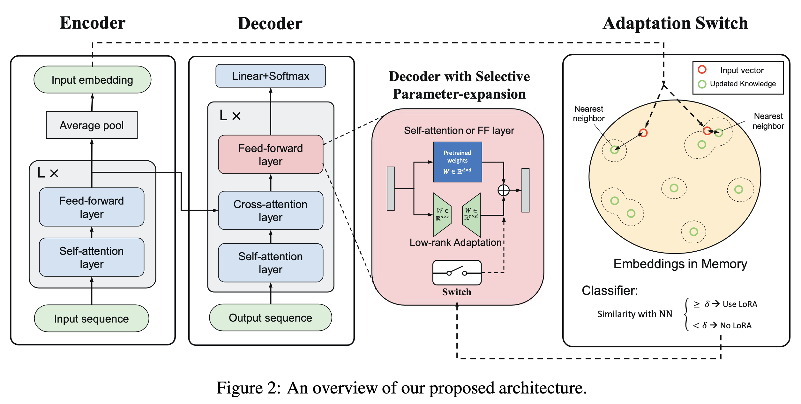

论文笔记 - Plug-and-Play Adaptation for Continuously-updated QA
1. Information
Title: Plug-and-Play Adaptation for
Continuously-updated QA
Link: PPA
Paper
Source: Annual Meeting of the Association for
Computational Linguistics (ACL)
Date: 2022.04.27
2. Summary
本文提出了一种新的任务——连续更新问答 (Continuously-updated QA, CuQA)，旨在评估语言模型 (LMs) 作为隐式知识库 (KBs) 时，如何在保留现有知识的同时，有效地添加和更新知识。作者通过引入插件模块，有效地处理了大规模知识更新的问题，并在 zsRE QA 和 NQ 数据集上进行了实验，结果表明该方法在更新/遗忘比率上比传统的微调方法高出 4 倍。
3. Background
语言模型 (LMs) 因其出色的事实知识记忆能力，被广泛用作隐式知识库 (KBs)。然而，为了保持与不断变化的世界同步，LMs 需要定期更新知识。现有的评估 LMs 作为 KBs 的任务，如 LAMA 和 CBQA，未能充分考虑大规模知识更新的情况。因此，作者提出了 CuQA 任务，以测试 LMs 在连续注入知识更新时的能力。
4. Research Objective
本文旨在开发一种方法，使得问答模型能够：
- 在无需完全重训的情况下快速适配新知识；
- 在适配新知识时，保留对旧知识的记忆；
- 提高对持续知识更新场景的问答性能。
5. Method
5.1 问题定义
CuQA 任务分为两个阶段：
- 训练初始模型 \(\theta_{\text{old}}\) 存储原始知识 \(K_s\)。
- 在模型中注入目标知识 \(K_t\)，获得更新后的模型 \(\theta_{\text{new}}\)。目标是使 \(\theta_{\text{new}}\) 在学习 \(K_t\) 时，尽量减少对 \(K_s\) 的遗忘。
指标定义：
- 目标知识准确率: 衡量 \(\theta_{\text{new}}\) 对 \(K_t\) 的记忆能力。
- 原始知识准确率: 衡量 \(\theta_{\text{new}}\) 遗忘 \(K_s\) 的程度。
- F/U 比率: 遗忘/更新的比率，反映学习一个新知识时遗忘旧知识的数量。
5.2 插拔式适配方法

核心思想: 使用可选模块存储新知识，避免修改原模型参数，结合低秩矩阵实现高效更新。
参数扩展公式: 插入新模块 \(g(x)\)，存储目标知识。整体输出为： \[ h=f(x)+\sigma(q) \cdot g(x) \]
- \(f(x)\): 原模型的输出，固定参数。
- \(g(x)\): 插入的扩展模块，用于存储目标知识。
- \(\sigma(q)\): 选择器，决定是否激活 \(g(x)\)。
选择器定义: 通过最近邻匹配计算输入 \(q\) 与目标知识 \(K_t\) 的相似性： \[ s_q=\max _{m_i \in M} \operatorname{sim}\left(m_i, q\right) \]
\[ \sigma(q)= \begin{cases}1 & \text { 如果 } s_q \geq \delta \\ 0 & \text { 如果 } s_q<\delta\end{cases} \]
其中 \(s_q\) 是查询嵌入与记忆嵌入 \(M\) 中最近邻之间的余弦相似度。
- 多组知识更新的一般情况：模型可以被表达为：
\[ h=f(x)+\sum_{k=1}^M \sigma_k(q) \cdot g_k(x) \]
- \(f(x)\): 基础模型的固定函数，用于表示初始的知识存储（未更新）。
- \(g_k(x)\): 第 \(k\) 个知识更新的适配函数，用于添加目标知识 \(K_{tk}\)。
- \(\sigma_k(q)\): 开关函数，用于根据查询 \(q\) 动态激活相关知识适配函数 \(g_k(x)\)。
训练阶段:
在训练第 \(j\) 个目标知识 \(K_{tj}\) 时，开关函数 \(\sigma_k(q)\) 会被激活，其中 \(1 \leq k \leq j\)。 也就是说，模型只会激活当前和之前的知识更新模块。
推理阶段:
在推理时，利用一个最近邻（NN）选择器从存储模块中选出与查询最相似的知识组： \[ m^*=\arg \max (\operatorname{sim}(m, q)), \quad m \in M_1: M \]
- \(m^*\): 最近邻选择出的最相关知识单元。
- \(\text{sim}(m, q)\): 表示知识单元 \(m\) 与查询 \(q\) 的相似度。
如果 \(m^* \in M_j\)，则说明查询需要访问第 \(j\) 次知识更新。此时，开关函数 \(\sigma_k(q)\) 的激活规则如下： \[ \sigma_k(q)= \begin{cases}1, & \text { 如果 } s_q \geq \delta \text { 且 } 1 \leq k \leq j, \\ 0, & \text { 如果 } s_q<\delta .\end{cases} \]
- \(s_q\): 表示查询 \(q\) 的激活信号强度。
- \(\delta\): 预设的激活阈值。
- \(k \leq j\): 保证只激活当前及之前的适配模块。
在上述机制下，最终的知识表示是所有被激活模块的累积函数： \[ \sum_{k=1}^j g_k(x) \] 累积的意义: 累积不同模块的知识表示可以捕捉多层次的信息**，即既包含较早知识的基础信息，也包含最新知识的细化信息。
示例:
如果我们在训练中依次学习了多个知识模块 \(K_{t 1}, K_{t 2}, K_{t 3}\)，它们之间可能是关联的。比如：
\(K_{t1}\): 基础常识（语言结构）。
\(K_{t2}\): 特定领域知识（医学）。
\(K_{t3}\): 新的医学技术（补充知识）。
使用累积函数可以保证对每层知识的组合理解，而不仅仅是最新一组。
6. Evaluation
- 数据集:
- zsRE: 包含关系特定的 QA 对，分为原始知识 \(K_s\)、目标知识 \(K_t\) 和未见问题集 \(P_s\)、\(P_t\)。
- NQ + SituatedQA: 使用 NQ 作为 \(K_s\)，将时间相关的 QA 配对作为 \(K_t\)。
- 实验结果:
- 准确率: 在 \(K_s\)、\(K_t\) 上均表现出色，显著优于基线模型。
- F/U 比率: 插拔式方法的遗忘率最低，仅为 Fine-tuning 的 1/4。
- 消融实验:
- 研究不同模块（如前馈层、注意力层）对性能的影响，发现前馈层对知识记忆更重要。
7. Conclusion
本文提出了一个名为 CuQA 的新任务和一种使用插件模块高效更新 LMs 的方法。该方法在保留现有知识的同时添加新知识，展示了在 zsRE 和 NQ 数据集上的优越性能。提出的方法具有可扩展性，能够处理多次大规模知识更新。